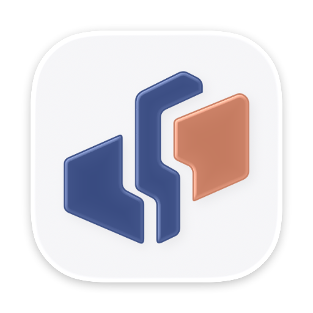

现行 · 归栈宽缝
三片错位卡片，中间一条带台阶的索引脊，两道宽缝。
问题16px 下三片糊成两团；三片的倾斜角度不统一；系统给每个凹口和尾巴都加了高光，Dock 里显得碎。
三个方向，每个都有浅瓷底和青花底两种底板。“程序坞”一栏是 macOS 26.4 对临时测试包的实际渲染，其余是 SVG 直接显示。正式应用的图标没有替换。
#354d85、珊瑚 #cf7659；深色界面用 #b4c9ed 与 #e2a18b。client/src/styles/control-tokens.css 和 workbench.css，尺寸与侧栏、助手页一致。node docs/design/dovun/icon-redesign/generate-round-01.mjs（Node 22）。大图是系统实际渲染，带 macOS 26 的玻璃边缘。

三片错位卡片，中间一条带台阶的索引脊，两道宽缝。
问题16px 下三片糊成两团；三片的倾斜角度不统一；系统给每个凹口和尾巴都加了高光，Dock 里显得碎。
保留三片、两色和向右上错开的节奏。三片用同一个斜度，中脊只留一个 45° 转折，去掉凹口和尾巴。
好处和现行一脉相承，用户不用重新认。16px 能数出三片。
风险三条斜块向右上排开，容易被看成柱状图或“增长”图标。
一块圆角方被一道 L 形缝分开：深蓝的是工作台，右上角珊瑚色的是手上正在做的那张卡。
好处只有两块，16px 最清楚；外轮廓就是圆角方，在系统玻璃效果下最干净。
风险形状通用，接近“布局”“小组件”一类图标，辨识主要靠配色。
一枚珊瑚色方印，中间刻出回纹，用白文印的刻法。浅瓷底对应界面的瓷白主题，青花底对应深蓝配朱砂。回纹一圈圈往里收，也接上“归到一处”的原意。
好处最好记，和 Dock 里其他图标区别最大；单色、反白、通知剪影都成立。
风险16px 下回纹只剩纹理，看起来是一块带花纹的珊瑚方块；印章和回纹都是常见元素，商标近似要查。
临时测试包经 macOS 26.4 渲染（NSWorkspace），测试包生成后已删除并注销。上为浅色桌面，下为深色桌面。
左边两栏是不带底板的标记，用在 favicon、侧栏和助手页，按 16、24、32、48px 显示（Retina 屏上浏览器按 2 倍渲染）。右边是图标文件里实际的 16px 与 32px 位图，放大 4 倍，即非 Retina 屏上的样子。
侧栏品牌区（39×43，含收起后的窄栏）、工作助手卡片（46×51）、助手欢迎页（58×64）。浅色与深色并排。
网页版用不带底板的标记作 favicon。深色标签栏用深色配色，可以在 SVG 里用 prefers-color-scheme 切换。
Android 状态栏只取小图标的透明度，颜色全部丢掉。现行 push-icon-192.png 是不透明的整块，所以显示成白色方块。候选各自带一个白色剪影。
打印、单色印章、深色底上的反白。